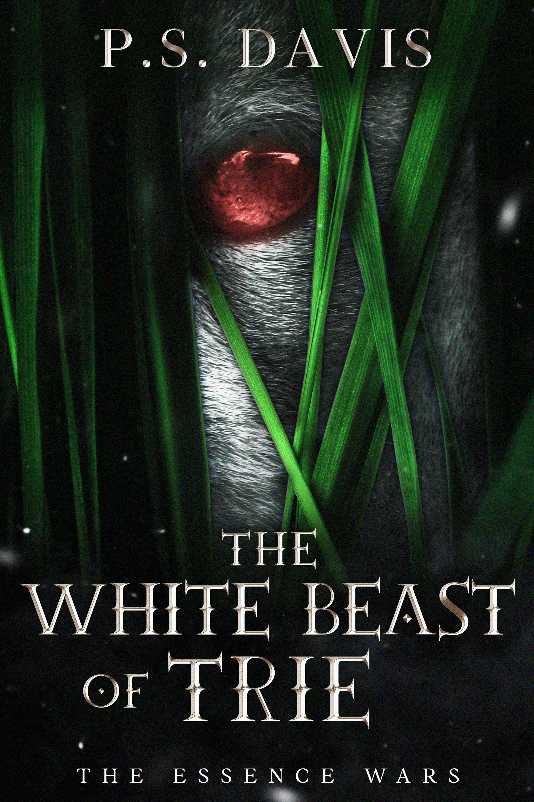

P. S. Davis
Author of The White Beast of Trie

High in the Trie Range, Brother Arley lives a quiet life of ledgers, prayer, and routine until a string of violent deaths shatters the peace of his monastery.
Whatever is moving beneath the mountain leaves little behind. A broken body. Men turned against one another. A clump of white fur caught on stone.
Forced from the cloister to hunt the creature with a man he does not trust, Arley is driven into a hard land where fear spreads faster than truth, and mercy may prove more dangerous than violence.
To save it may cost him everything. To surrender it may cost far more.
A dark fantasy short story about fear, faith, and the price of mercy, set in the world of The Essence Wars.
Available now as a Kindle Unlimited exclusive.
Order the eBook now at:
There is no paperback edition available at this time.
The White Beast of Trie stands on its own, while opening another path through the wider Essence Wars saga.